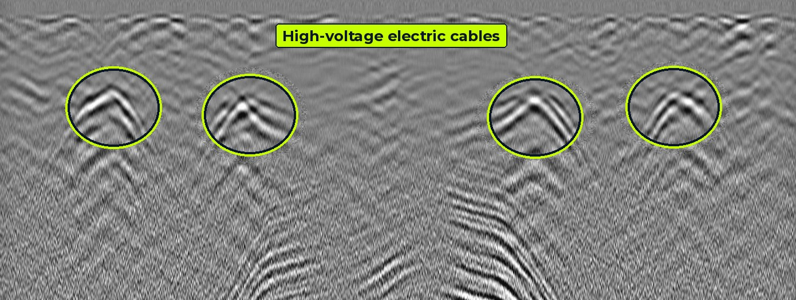

GPR survey in Hyderabad and across South India
Aviqor Mapping is a GPR survey company based in Manikonda, Hyderabad. We locate buried pipes and cables, scan concrete and investigate railway ballast for clients in Telangana, Andhra Pradesh, Karnataka, Tamil Nadu, Kerala and the rest of India.
A Hyderabad GPR team with consultant-level interpretation
Most GPR surveys fail at interpretation, not at data collection. Our engineers from the IITs, NITs and leading state universities calibrate depths on site and pick every service before the report is issued, so your excavation team can dig with confidence.
- GPR utility detection and utility mapping before excavation, HDD and piling
- Railway ballast investigation with 2 GHz and 400/900 MHz antennas
- Concrete and structural scanning with a 2 GHz antenna
- ERT, SRT and MASW geophysical surveys, topographic survey and 3D laser scanning
- Competitive project-based pricing

GPR survey across South India
We mobilise from Hyderabad to project sites across the southern states and the rest of India.
Telangana
Hyderabad, Secunderabad, Cyberabad, Warangal, Karimnagar, Nizamabad
Andhra Pradesh
Visakhapatnam, Vijayawada, Amaravati, Guntur, Tirupati, Nellore
Karnataka
Bengaluru, Mysuru, Mangaluru, Hubballi
Tamil Nadu
Chennai, Coimbatore, Madurai, Tiruchirappalli
Kerala
Kochi, Thiruvananthapuram, Kozhikode
Rest of India
Road, metro, rail and industrial projects in other states
GPR survey FAQs
What is a GPR survey?
A GPR (ground penetrating radar) survey sends radio pulses into the ground and records the echoes. Pipes, cables, voids and layer changes show up as reflections, so they can be mapped without digging.
How deep can a GPR survey detect utilities?
With a 250 MHz antenna, services can typically be detected to about 3 to 4 m in good ground. Wet clay and saline soils reduce depth. Our recent surveys picked gas and water pipelines at 2.1 to 2.8 m.
How much does a GPR survey cost in Hyderabad?
Cost depends on the area or route length, site access, target depth and the drawings you need. We quote per project at competitive rates. Send your location and scope on WhatsApp for a quotation.
Do you carry out GPR surveys outside Hyderabad?
Yes. We work across Telangana, Andhra Pradesh, Karnataka, Tamil Nadu, Kerala and the rest of India, and in Oman.
Which GPR equipment do you use?
Leica DS2000 and DS4000 for utility detection, a 2 GHz antenna for concrete scanning, and 2 GHz plus 400/900 MHz antennas coupled to rail vehicles for ballast investigation.